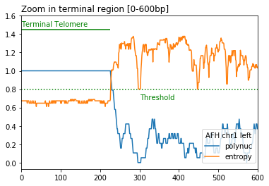
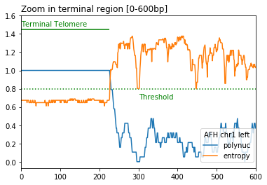

Telofinder¶
A python package to determine the location and the size of telomeric repeats (both terminal and internal) from genome assemblies. This version of the program only works for yeast genomes (telomere sequence TG1-3)
- Telomere detection is based on calculation in a 20 bp sliding window of the following two metrics:
DNA sequence entropy < entropy_threshold (default=0.8)
proportion of polynucleotides (default_list = ["CC", "CA", "AC"]) > polynuc_threshold (default=0.8)
 


Installation¶
You need to have bedtools in your PATH for telofinder to work.
Install (mini)conda:
Configure channels and add dependencies:
$ conda config --add channels conda-forge bioconda
$ conda create -n telofinder python=3.10
$ conda activate telofinder
$ conda install bedtools
install the telofinder package:
$ git clone https://github.com/GillesFischerSorbonne/telofinder.git
$ cd telofinder
$ pip install .
Usage¶
Using the conda environment created during Installation:
$ conda activate telofinder
$ telofinder [fasta_path]
Positional arguments¶
- fasta_path
path to a single (multi)fasta file or to a directory containing multiple fasta files
Optional arguments¶
- -f, --force
automatically replace the output 'telofinder_results' directory if present
- -e, --entropy_threshold
entropy threshold for telomere prediction, default = 0.8
- -n, --polynuc_threshold
poly-nucleotide threshold for telomere prediction, default = 0.8
- -s, --nb_scanned_nt
total number of nucleotides scanned for telomere detection, starting from each chromosome extremity. If set to -1, the whole chromosome sequences will be scanned, default = 20 000 bp
- -t, --threads
number of threads to use, default = 1
- -r, --raw
outputs the raw dataframe (raw_df.csv) containing the values of all sliding windows
Help¶
$ python telofinder.py --help
Output¶
Telofinder outputs a directory called telofinder_results including 2 csv and 2 bed files containing the telomere calls and their coordinates, either as raw output or after merging consecutive calls
Reference¶
- base_compos(sequence, base)[source]¶
Counts the number of a given base in a sequence
- Parameters:
sequence -- fasta sequence
base -- base to count in the sequence
- Returns:
the number of that base in the sequence
- classify_telomere(interval_chrom, chrom_len)[source]¶
From a list of tuples obtained from get_consecutive_groups, identify if interval corresponds to terminal or interal telomere
- compute_metrics(window, polynucleotide_list=['AC', 'CA', 'CC'])[source]¶
Compute entropy and polynucleotide proportion in the sequence window
- Parameters:
window -- sliding window
polynucleotide_list -- a list of polynucleotides, default value is ["AC", "CA", "CC"]
- Returns:
a dictionary of entropy and polynucleotide proportion of the sequence window
- count_polynuc_occurence(sub_window, polynucleotide_list)[source]¶
Define presence of polynucleotide in the window.
- Parameters:
sub_window -- the sequence of a sub_window
polynuleotide_list -- a list of polynucleotides. Note that all polynucleotides must be of the same size
- Returns:
a boolean for the presence of the sub_window in the polynucleotide list
- get_consecutive_groups(df_chrom)[source]¶
From the raw dataframe get start and end of each telomere window. Applied to detect start and end of telomere in nucleotide positions.
- get_entropy(window)[source]¶
Calculate the entropy of the window DNA sequence
- Parameters:
window -- sliding window
- Returns:
entropy value of the sequence window
- get_polynuc(window, polynucleotide_list)[source]¶
get the propbortion of polynuceotides in the window
- Parameters:
window -- sliding window
polynucleotide_list -- a list of polynucleotides. Note that all polynucleotides must be of the same size
- Returns:
total polynucleotide proportion in the sliding window
- get_strain_name(filename)[source]¶
Function to get the strain name from the name of the fasta file
- Parameters:
filename -- path of fasta file
- Returns:
sequence name
- get_telomere_in_telomeric_reads(bam_file, telo_df_merged, outdir, polynuc_thres, entropy_thres, nb_scanned_nt, threads)[source]¶
Extract telomeric reads from a bam file corresponding to telomere detected and reported in telo_df_merged
- Parameters:
bam_file -- An indexed bam alignment file.
telo_df_merged -- Merged DataFrame with telomeric informations (from one of the run_telofinder functions)
- output_dir_exists(force)[source]¶
Function to test if the 'telofinder_results' output diretory already exists.
- Parameters:
force -- overwrites the output directory otherwise exits program --force or -f
- Returns:
nothing
- parse_arguments()[source]¶
Function to parse and reuse the arguments of the command line
- Parameters:
fasta_path -- path to a single fasta file or to a directory containing multiple fasta files
force -- force optional, overwrites the output directory otherwise exits program, optional
entropy_threshold -- optional, default = 0.8
polynuc_threshold -- optional, default = 0.8
nb_scanned_nt -- number of scanned nucleotides at each chromosome end, optional, default = 20 000
threads -- Number of threads to use. Multithreaded calculations currently occurs at the level of sequences within a fasta file."
raw -- Outputs raw_df.csv containing the values of all sliding windows
- Returns:
parser arguments
- run_on_fasta_dir(fasta_dir_path, polynuc_thres, entropy_thres, nb_scanned_nt, direction, threads)[source]¶
Run iteratively the telemore detection algorithm on all fasta files in a directory
- Parameters:
fasta_dir -- path to fasta directory
- Returns:
a tuple of df, telo_df and telo_df_merged
- run_on_single_fasta(fasta_path, polynuc_thres, entropy_thres, nb_scanned_nt, direction, threads)[source]¶
Run the telomere detection algorithm on a single fasta file
- Parameters:
fasta_path -- path to fasta file
- Returns:
a tuple of df, telo_df and telo_df_merged
- run_on_single_seq(seq_record, strain, polynuc_thres, entropy_thres, nb_scanned_nt, direction)[source]¶
- run_telofinder(fasta_path, polynuc_thres, entropy_thres, nb_scanned_nt, direction, threads, raw, outdir)[source]¶
Run telofinder on a single fasta file or on a fasta directory
- sliding_window(sequence, start, end, size)[source]¶
Apply a sliding window of length = size to a sequence from start to end
- Parameters:
sequence -- fasta sequence
start -- starting coordinate of the sequence
end -- ending coordinate of the sequence
size -- size of the sliding window
- Returns:
the coordinate and the sequence of the window